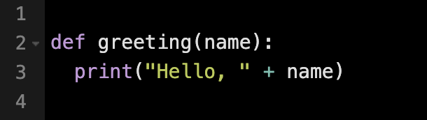
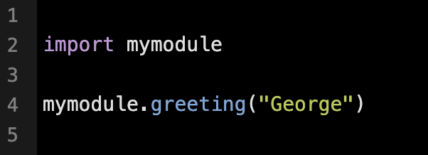
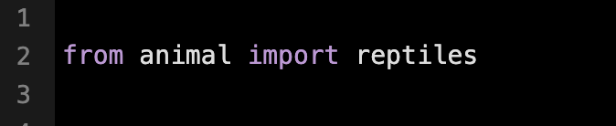
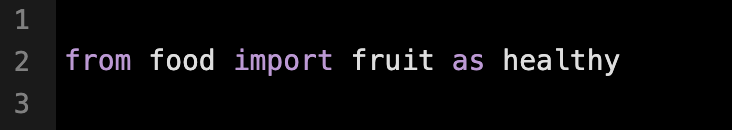

A module in Python is a file containing functions, definitions, and statements that can be imported and used in other programs.
Modules serve as reusable units of code, making it easier to organize and share functionality across applications. They allow access to shared libraries (collections of modules) and packages (which contain nested modules and sub-packages). Instead of manually entering commands into a Python interpreter, code can be stored in a module for convenient use in other programs.
To create a module, simply save a Python file with the .py extension. It can then be imported into another Python file using the import statement.
Save this code in a file named mymodule.py
You can use the module you just created, by using the import statement.
Import the module named mymodule and call it's greeting function
This imports everything in the mymodule module.
Rather than importing an entire module, specific resources can be imported individually by name.
This approach will import only the reptiles class from the animal module, instead of importing all the collections defined within it.
This is a practical strategy to improve program efficiency by importing only what's necessary, reducing potential performance issues, and preventing unnecessary clutter in the local namespace.
A module in our local namespace can be given a new name by assigning it an alias using the as keyword.
Aliasing is particularly useful for simplifying long module names and keeping the local namespace organized.
After a module is imported, it becomes part of the program's scope, and you can access it using its alias or original name within the local namespace.